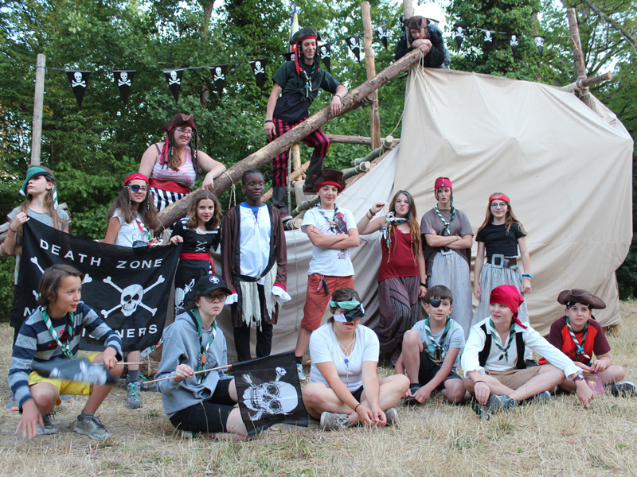
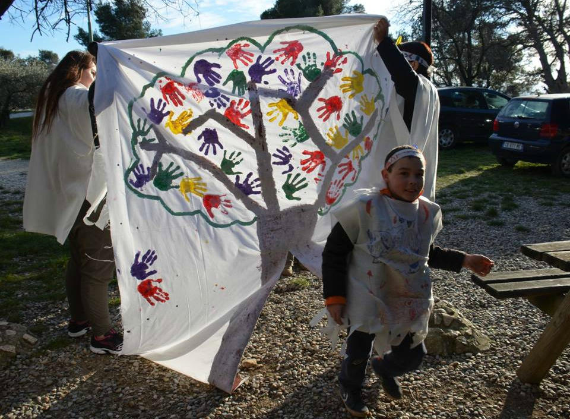
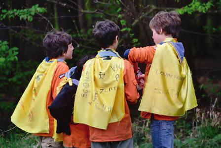
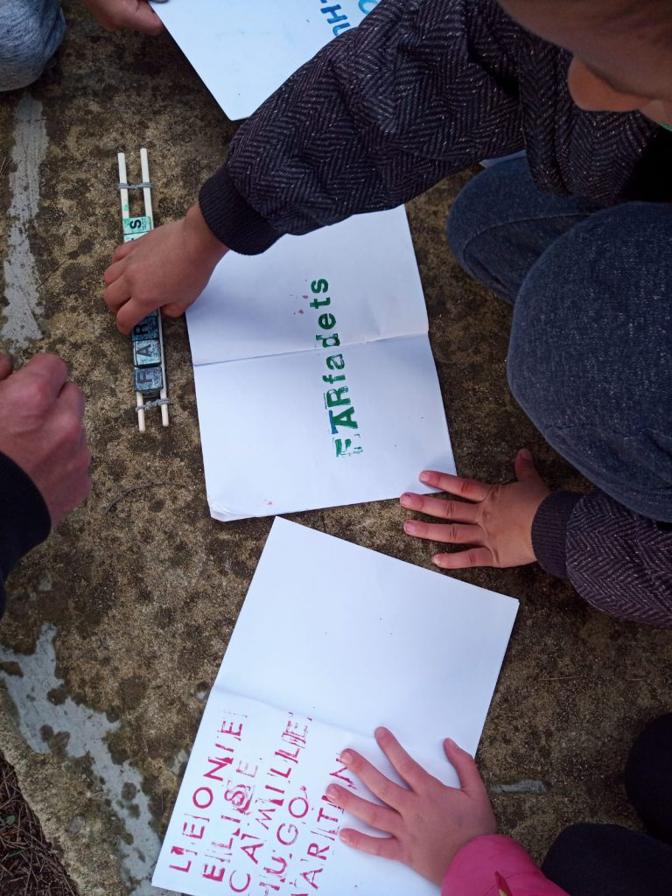

Faire vivre l'expérience des jeunes
Les chefs et cheftaines communiquent beaucoup avec les jeunes à partir des scouts et guides (chemises bleue). Avant, la communication passe souvent par les parents. L'envoie de mail est privilégié pour annoncer des événements, confirmer la date des week ends, soliciter l'aide des parents pour l'organisation des week ends de rentrée etc. Par exemple, les scouts peuvent aider au nettoyage d'église ou cathédrale, ce travaille étant colosale, pendant une après midi, le groupe entier de réunit, des farfadets aux compagnons en passant par les parents pour remettre en état le monument. Cette activité en commun est annoncées par mail, donne l'heure, la date et solicite les participants à apporter du matériel comme les balais, des serpillères, des aspirateurs etc.
Une fois les jeunes assez grands pour avoir accès à un ordinateur, la maitrise peut communiquer avec les jeunes de façon régulière, pour se doner des nouvelles, pour discuter, poser des questions, proposer des activités etc. Cela peut se faire sur WhatsApp en créant un groupe avec tous les jeunes possédant un téléphone portable et un numéro.
Il ya aussi la plateforme Discord avec la possibilité se faire des réunions en vidéo conférence ou encore sur Discout. Discout, c'est un peu le Discord ou Slack des sgdf : un espace de discussion pour son équipe scoute, avec une intégration de vidéo-conférence Jitsi pour des réunions virtuelles. Chaque espace d'équipe permet d'ouvrir un ou plusieurs canaux. Discout est un outil multi-device : il est accessible depuis un ordinateur comme depuis un smartphone ou une tablette. L'application mobile Mattermost, disponible sur toutes les plateformes, permet aussi d'y accéder. Il suffit d'y indiquer qu'on accède au serveur discout.latoilescoute.net puis s'identifier. Cette comunication entre les jeunes et les chefs permet de créer des liens plus forts. Les jeunes peuvent se souhaier leurs anniversaires, se dire "joyeux noel" et "bonne année". Ils peuvent partager leurs idées et les aides à garder un lien avec le scoutisme dans leur quotidien.
Les chefs et cheftaines mettent en place un imaginaire en début d'année. Afin de la faire vivre au mieux, ils trouvent des moyens de communication en rapport avec l'imaginaire choisi. Par exemple, si l'année est sur le moyen-âge, les jeunes pourront recevoir des lettres en parchemin du conteur d'histoire du village dans lequel ils ont été acceuilli pour une année afin de leur expliquer pourquoi ils sont là, soit, trouver qui est ce voleur de céréales qui rode depuis plusieurs semaines dans le village et plus communémant appelé le céréales-killer... Bref la maitrise va faire tourner cette année autour d'un imaginaire comme celui là et adapter leur communication avec les jeunes par rapport à celui-là. Mais les imaginaires peuvent être très différents, ça peut être un imaginaire sur les agents secrets avec des lettre de mission, les pirates avec des messages en bouteilles, Fort boyard et les messages du père Fourras, etc.